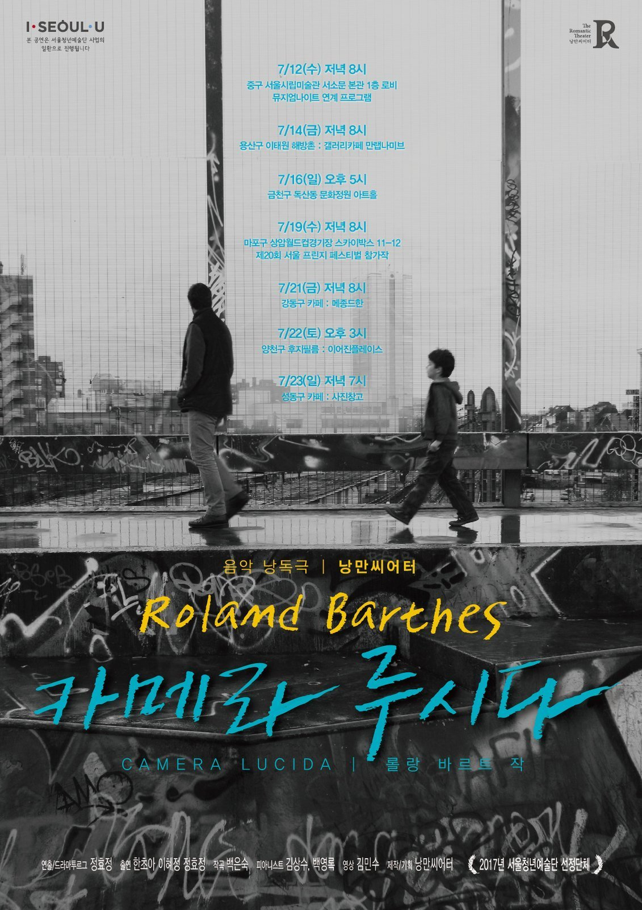

Camera Lucida
〈카메라 루시다〉(La Chambre claire, 1980) 원작 · after Roland Barthes's La Chambre claire (1980)
서울청년예술단 〈살롱프로젝트〉 세 번째 작품 · 2017년 여름 서울 · The third work in the Salon Project, Seoul, summer 2017 — the music-reading theatre at the Seoul Museum of Art (Museum Night, within the Fondation Cartier exhibition) and the 20th Seoul Fringe Festival; the exhibition in a Haebangchon gallery
〈카메라 루시다〉는 사진의 매혹을 탐구한 프랑스의 철학자이자 비평가 롤랑 바르트의 마지막 저서다. 바르트는 어머니가 세상을 떠난 뒤 어린 시절부터의 사진을 들여다보다, 그 가운데 단 한 장 — 온실에서 찍힌 어머니의 사진에서 어머니라는 존재의 본질을 발견한다. 그는 개인적인 경험을 통해 사진을 '감정'으로 읽어내며 스투디움과 푼크툼이라는 개념을 길어 올린다.
낭만씨어터의 〈살롱프로젝트〉 세 번째 작품인 이 트릴로지는 한 권의 책을 세 가지 형식으로 옮긴다. 무대 위의 음악낭독극, 화면 위의 단편영화, 그리고 정효정 단장의 개인 사진전 〈나를 찌르는 것들〉 — 세 형식이 서로를 비추며 하나의 작품으로 이어진다.
Camera Lucida is the final book of the French philosopher and critic Roland Barthes, a study of the lure of the photograph. After his mother's death, Barthes looked through photographs of her from childhood on and found a single one — taken in a winter garden — that held the very essence of who she was. Reading photographs through feeling, he drew out the twin ideas of the studium and the punctum.
The third work in Nangman Theatre's Salon Project, this trilogy carries one book into three forms: a music-reading theatre on stage, a short film on screen, and Hyojung Jung's solo photography exhibition The Things That Pierce Me. Each form mirrors the others into a single piece.
I
Music-reading theatre
배우들의 낭독과 노래, 피아노 한 대로 바르트의 문장을 무대에 올린다. 서울시립미술관 뮤지엄나이트, 제20회 서울 프린지 페스티벌을 비롯해 그해 여름 서울 곳곳을 순회했다.
II
Short film
사진과 기억, 응시와 부재를 흑백의 화면으로 옮긴 짧은 영화. 유리와 빛, 겹쳐지는 얼굴들로 '바라봄'과 '사라짐'을 이야기한다.
III
Exhibition — The Things That Pierce Me
정효정 단장의 개인 사진전. 바르트의 '푼크툼' — 사진 속에서 나를 문득 찌르는 것 — 을 제목으로 삼아, 2017년 7월 이태원 해방촌 갤러리에서 열렸다.
내가 거기에 있었다.
— 사진이 증언하는 단 하나의 사실, ‘그것은-존재-했음’ · the photograph's one certainty: that-has-been
사진을 문화와 지식으로 읽는 일반적인 관심. 우리가 한 장면을 ‘이해’하는 방식이다.
의도하지 않았는데 나를 문득 찌르고 상처 내는 세부. 〈나를 찌르는 것들〉이라는 사진전 제목은 여기서 왔다.
음악낭독극 — 서울 순회 · music-reading theatre — Seoul tour (2017)
사진전 〈나를 찌르는 것들〉 · Exhibition — The Things That Pierce Me (2017)
서울청년예술단 선정 사업으로 진행된 트릴로지 · 서울특별시 후원. · A trilogy presented as part of the Seoul Youth Arts Group programme, supported by Seoul Special City.
서울시립미술관 — 까르띠에 현대미술재단 특별전 뮤지엄나이트 연계 공연 (2017)
Seoul Museum of Art — performed for Museum Night within the Fondation Cartier exhibition
같은 무대 · 서울시립미술관 뮤지엄나이트 (2017)
The same stage · Museum Night at the Seoul Museum of Art
서울시립미술관 · 까르띠에 현대미술재단 특별전 전시장 로비 공연 전경 (2017)
A full view — the Fondation Cartier exhibition hall at the Seoul Museum of Art
단편영화 스틸 · Film still
단편영화 스틸 · Film still
사진전 포스터 · 정효정 개인 사진전 〈나를 찌르는 것들〉 (2017)
Exhibition poster · Hyojung Jung, The Things That Pierce Me
사진들이 걸린 전시 공간에서의 공연과 관객 (2017)
A performance among the hung photographs, with the audience
사진전 〈나를 찌르는 것들〉이 열린 공간에서의 공연 · 이태원 해방촌 (2017)
In performance in the gallery where the exhibition was held · Haebangchon, Itaewon
리플렛 · 작품 소개 · 스투디움/푼크툼 (2017)
Leaflet — about the work · studium & punctum
리플렛 · 프로그램 · 노래 순서 (2017)
Leaflet — programme
리플렛 · 단체 소개 (2017)
Leaflet — about the company
리플렛 · 배우와 스탭 (2017)
Leaflet — cast & staff
BBS 불교방송 뉴스 · 〈대중과 소통하는 청년 불자들〉 — 낭만씨어터와 사진전 〈나를 찌르는 것들〉 소개 (2017)
BBS Buddhist Broadcasting News — a report featuring Nangman Theatre and the exhibition The Things That Pierce Me
와보숑TV · 〈동네인터뷰 7 — 청년예술단 낭만씨어터편〉 — 〈카메라 루시다〉 공연 인터뷰 (2017)
Wabosyong TV · Neighbourhood Interview 7 — Nangman Theatre — an interview around the Camera Lucida performance